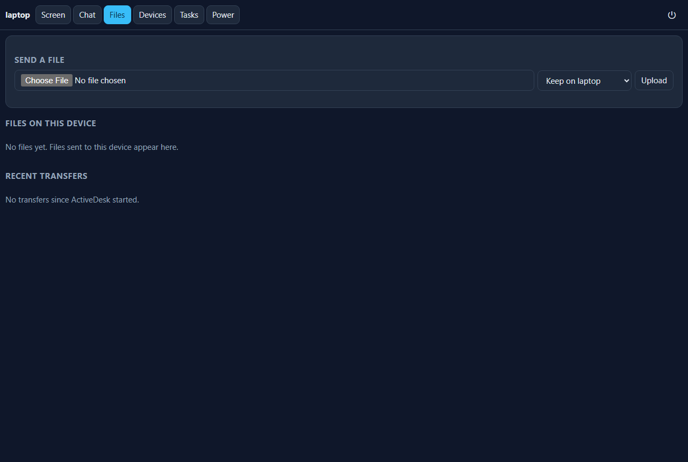

Private device mesh over Tailscale
Use all your devices from your phone
One small Java program on every laptop, desktop and Raspberry Pi. No server, no cloud account, nothing opens to the internet. Control screens, move files, chat and manage battery charge from your phone’s browser — peer to peer over your Tailscale tailnet.



Quick start
Three steps, then you’re up and running.
1. Tailscale on every device
Install Tailscale on your phone, Windows laptop, Raspberry Pi and any other device. Sign in to the same account so they share one tailnet.
2. Install ActiveDesk
Get the portable activedesk.jar from Releases, or build it with ./build.sh. Java 17+ is the only requirement.
3. Open it from your phone
Run ActiveDesk, note the 8-digit PIN it prints, then open http://<device>:47801 from your phone’s browser over Tailscale. Enter the PIN and tap “Add to Home Screen.”
$ curl -fsSL https://pymite6941.github.io/ActiveDesk/install.sh | sh
> irm https://pymite6941.github.io/ActiveDesk/install.ps1 | iex

What it does
Everything runs peer to peer. Your devices find each other over Tailscale; nothing ever listens on your LAN or the internet.
Remote screen
View and control a computer’s screen from your phone. Tap to click, hold to right-click, drag, two fingers to scroll. Nothing is drawn on the controlled screen; every session is logged and announced in chat.
Chat & files
Message between devices and send files with SHA-256 verification. Works as a fallback with plain nc too.
Battery & power
Keep a laptop charged only between 40–80%, set power modes, adjust brightness and run an auto power saver—only while ActiveDesk runs.
Wake devices
Wake a sleeping computer over your LAN through any awake ActiveDesk device. Useful when your Raspberry Pi is always on.
Keep screen on
Stop a device blanking or locking while you’re controlling it—session mode (while connected), always (kiosk), or off.
Scheduler
Run backups, HTTP scrapes, shell commands and more on a schedule, with dependencies, retries and timeouts.